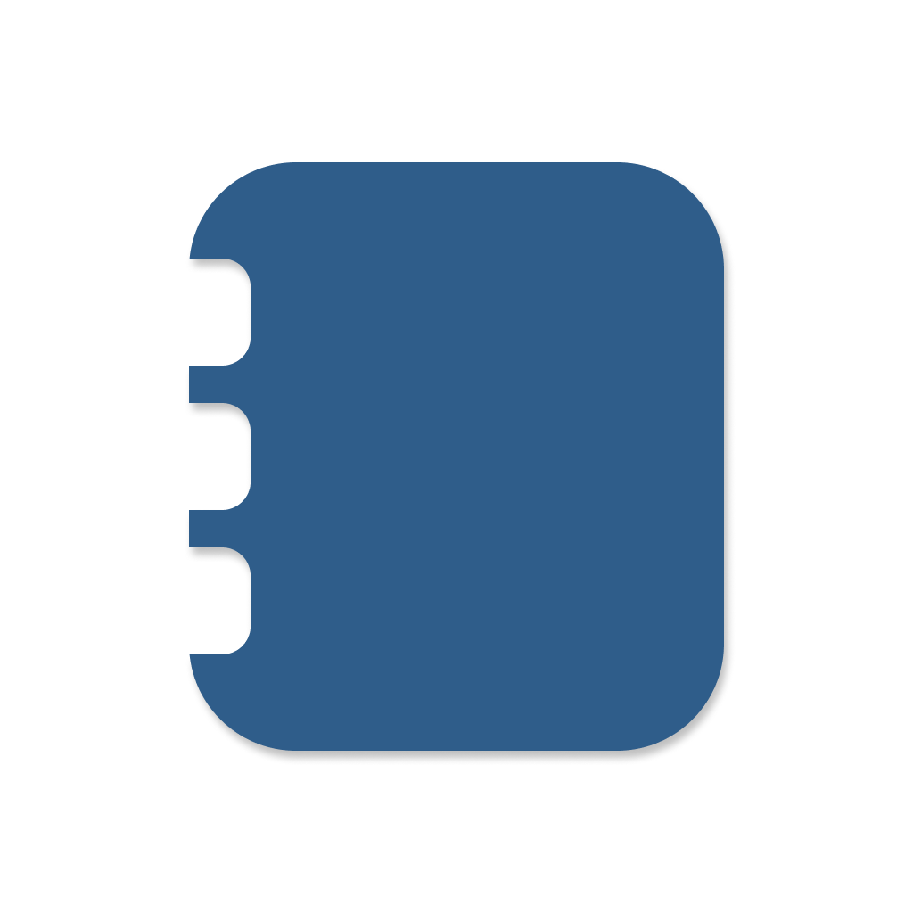

HomeOps
A private, offline-first home memory

What it is
HomeOps is a private, offline-first home memory. Track appliances, warranties, and maintenance in one place — and get reminders before it's too late.
- • Track all your home assets
- • Never miss warranty expirations
- • Built-in maintenance reminders
- • Works fully offline
- • No accounts, no cloud, no tracking
Why it exists
HomeOps was built from the frustration of losing warranty information, forgetting when appliances were purchased, and missing important maintenance deadlines. It solves this by keeping everything organized in one private, offline app that respects your privacy.
Availability
HomeOps is currently under review by Apple. As soon as the app is approved, we'll add the App Store link here.
Stay tuned for the official release!